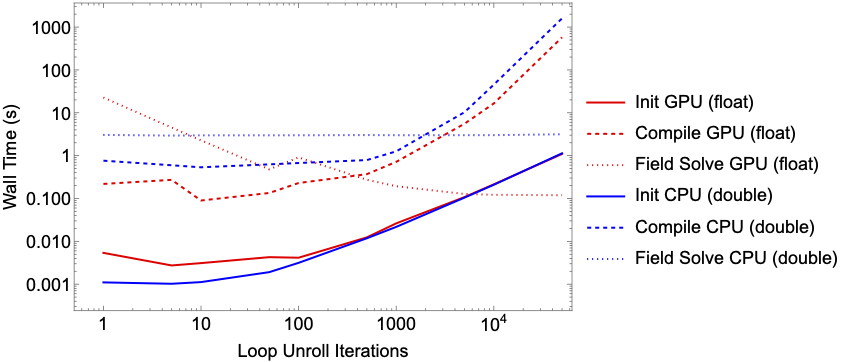

- Generated by
 1.9.8
1.9.8
|
Graph Framework
|
Notes on optimizing kernel performance.
There is a balance kernel run time, compile time, and kernel source code size. To discuss these issues we can explore a case study for a simple field solve of a Particle In Cell (PIC) code. The field solve involves computing the contribution of a every particle to fields. Fields are typically discretized onto a grid which will have a smaller size compared to the number of particles.
Take the example case.
In this example we build two kernels. The Initialize_x kernel set random values between \(1\) and \(-1\) for particle positions to represent a particle state after a particle push step. This kernel is applied over each of the \(1\times10^{6}\) particles.
The Set_Grid kernel mimics a simple field. For a given particle position \(x\), the contribution to grid point is defined as
\begin{equation}g_{next}=g+e^{-\frac{\left(x\left[i\right]-gx\right)^{2}}{10}}\end{equation}
where \(i\) is the particle index, \(g\) is the current grid value, \(gx\) is the grid position, and \(g_{next}\) is the updated value. After each kernel call, the particle index is incremented. This kernel is applied over each of the \(1\times10^{3}\) gird points.

In this section we focus on the Set_Grid kernel and the batch. When batch = 1, the kernel only adds the kernel contribution for a single particle. To compute the full field, we would need to call this kernel \(1\times10^{6}\). Setting batch > 1 allows us to unroll the kernel call loop. This reduces the number of times we need to call the kernel but comes at the expense of a larger kernel and an associated compile penalty. If we were to set batch = 1000000 then we would fully unroll the loop resulting in only needing to call the kernel once. However it would come at the expense of the generated kernel source having over \(1\times10^{6}\) lines of code. In testing, loop unrolling beyond \(1\times10^{5}\) resulted in a segmentation fault.
The figure above, shows the scaling of the setup time for the graphs, the compile time for the kernel and the resulting run time. A benchmark was performed on a Apple M1 Pro for both float and double precision. Note that the GPU on the M1 Pro only support single precision. CPU benchmark was performed on a single core.
Unrolling the loop up to \(500\) iterations shows a significant reduction in the GPU kernel run time with a negligible affect on the initialization and kernel compile time. Beyond \(1000\) iterations, the improvement to kernel runtime becomes negligible. However, any gaines we made in runtime improvement is lost due to penalty to kernel compiling. For CPU execution there is little to no noticeable performance improvement when unrolling kernel call loops.